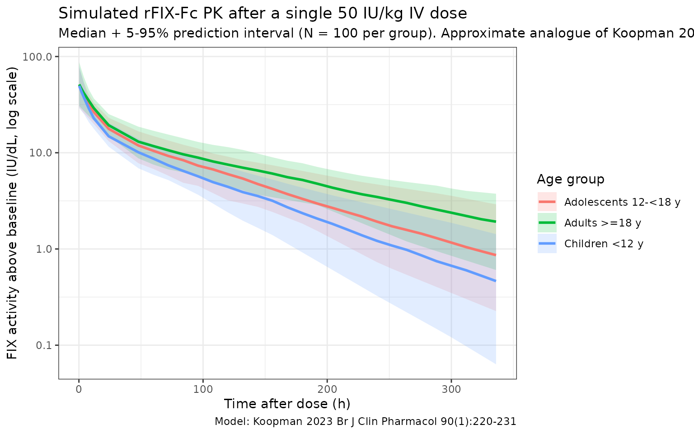

Koopman_2023_factorix
Source:vignettes/articles/Koopman_2023_factorix.Rmd
Koopman_2023_factorix.RmdModel and source
- Citation: Koopman SF, Goedhart TMHJ, Bukkems LH, et al. A new population pharmacokinetic model for recombinant factor IX-Fc fusion concentrate including young children with haemophilia B. Br J Clin Pharmacol. 2024;90(1):220-231. doi:[10.1111/bcp.15881](https://doi.org/10.1111/bcp.15881)
- Description: Two-compartment population PK model for recombinant factor IX-Fc fusion protein (rFIX-Fc, eftrenonacog alfa, Alprolix) in haemophilia B patients aged 2-71 years.
- Article: https://doi.org/10.1111/bcp.15881
- Modality: Fc-fusion factor concentrate, IV bolus.
rFIX-Fc is an extended half-life FIX concentrate consisting of a single recombinant factor IX molecule fused to the dimeric Fc domain of human IgG1. The Fc domain binds FcRn, delaying lysosomal degradation and prolonging the circulation half-life relative to standard rFIX. Koopman 2023 externally evaluated the only previously published rFIX-Fc population PK model (Diao 2014, based on patients aged >= 12 years) using real-world data and found systematic underprediction (median PE -48.8% across all patients, -54.1% in children <12 years). They then developed a new two-compartment model fit to the combined OPTI-CLOT TARGET (Netherlands) and UK-EHL Outcomes Registry cohorts.
The packaged model implements the new Koopman 2023 model (the right-hand column of Koopman 2023 Table 2; equations on p. 226), not the published Diao 2014 model. The new model has a single covariate effect: a linear-deviation slope of age on CL, centered at the cohort median age of 15.8 years. Allometric scaling of all PK parameters by body weight (reference 73 kg) is applied with theoretical exponents (0.75 on CL and Q; 1.00 on V1 and V2).
Population
The development cohort comprised 37 patients with haemophilia B treated prophylactically with rFIX-Fc (Koopman 2023 Table 1):
- 35 severe (FIX < 1 IU/dL) and 2 moderately severe haemophilia B.
- Age 2-71 years (median 15.8 years, IQR 11-30).
- Body weight 12-103 kg (median 65.4 kg, IQR 33-77).
- 19/37 (51%) paediatric (< 18 years), 14/37 (38%) < 12 years, 7/37 (19%) < 6 years.
- Median dose 36 IU/kg rFIX-Fc IV (range 10-132 IU/kg).
- Median 5 FIX activity samples per PK profile (range 3-7); 287 measurements total, 3 below LLOQ excluded.
- Sex: hemophilia B is X-linked, so the cohort is essentially all male.
- Region: Netherlands (OPTI-CLOT TARGET, NTR7523) and United Kingdom (UK-EHL Outcomes Registry, NCT02938156).
The same metadata is available programmatically via
readModelDb("Koopman_2023_factorix")$population.
Source trace
The per-parameter origin is recorded as an in-file comment next to
each ini() entry in
inst/modeldb/specificDrugs/Koopman_2023_factorix.R. The
table below collects them in one place for review.
| Parameter (model name) | Value | Source |
|---|---|---|
lcl (typical CL, dL/h) |
log(1.41) | Koopman 2023 Table 2 (New): CL = 1.41 dL/h |
lvc (typical V1, dL) |
log(73.1) | Koopman 2023 Table 2 (New): V1 = 73.1 dL |
lq (typical Q2, dL/h) |
log(2.77) | Koopman 2023 Table 2 (New): Q2 = 2.77 dL/h |
lvp (typical V2, dL) |
log(80.1) | Koopman 2023 Table 2 (New): V2 = 80.1 dL |
| Allometric exponent on CL, Q | 0.75 (fixed) | Koopman 2023 Table 2 (New): bodyweight exponent on CL and Q2 = 0.75 |
| Allometric exponent on V1, V2 | 1.00 (fixed) | Koopman 2023 Table 2 (New): bodyweight exponent on V1 and V2 = 1.00 |
e_age_cl (linear age slope, 1/y) |
0.0047 | Koopman 2023 Table 2 (New): age exponent on CL = 0.0047 |
| Reference body weight | 73 kg | Koopman 2023 Table 2 footnote |
| Reference age | 15.8 years | Koopman 2023 equations on p. 226: (AGE - 15.8)
|
IIV block etalcl + etalvc
|
c(0.05570, 0.03281, 0.09986) | Koopman 2023 Table 2: IIV CL = 23.6%, IIV V1 = 31.6%, corr CL:V1 = 44.0% |
etalvp |
0.16974 | Koopman 2023 Table 2: IIV V2 = 41.2% |
propSd |
0.163 | Koopman 2023 Table 2: proportional error = 16.3% |
addSd |
1.04 IU/dL | Koopman 2023 Table 2: additive error = 1.04 IU/dL |
Equation: d/dt(central)
|
n/a | Koopman 2023 p. 226 (new model equations): two-compartment IV |
Equation: d/dt(peripheral1)
|
n/a | Koopman 2023 p. 226 (new model equations) |
The footnote of Koopman 2023 Table 2 states “IIV and IOV coefficient
of variation calculated as: sqrt(variance)*100%”, i.e., the reported CV%
values are sqrt(omega^2) * 100, so
omega^2 = (CV/100)^2. The IIV variances above were computed
by squaring 0.236, 0.316, and
0.412, and the CL:V1 covariance as
0.44 * 0.236 * 0.316.
The new model also reports inter-occasion variability on CL (IOV CL = 19.8%) which is not implemented in this static model file; see Assumptions and deviations.
Virtual cohort
Original observed FIX activity data are not publicly available. The simulations below use a virtual cohort whose demographics approximate the Koopman 2023 development population, stratified into the three age groups used in the paper’s half-life table (Supplementary Table 3): children < 12 years, adolescents 12 - < 18 years, and adults >= 18 years. Body weight is sampled from a log-normal distribution centered on a typical weight-for-age within each band, capped at the observed range from Koopman 2023 Table 1.
set.seed(2023)
make_cohort <- function(n, age_min, age_max, wt_log_mean, wt_log_sd,
wt_lo, wt_hi, label, id_offset = 0L) {
tibble(
ID = id_offset + seq_len(n),
AGE = runif(n, age_min, age_max),
WT = pmin(pmax(rlnorm(n, log(wt_log_mean), wt_log_sd), wt_lo), wt_hi),
age_group = label
)
}
n_per_group <- 100L
cohort <- bind_rows(
make_cohort(n_per_group, 2, 12, 22, 0.30, 12, 45,
"Children <12 y", id_offset = 0L),
make_cohort(n_per_group, 12, 18, 50, 0.20, 35, 80,
"Adolescents 12-<18 y", id_offset = 100L),
# Adults are sampled over 18-50 to approximate the median age of the
# development cohort (overall median 15.8 y, paediatric n = 19, adult
# n = 18, so the adult median is likely in the late twenties / early
# thirties — a uniform 18-71 sample shifts the median half-life upward
# because of the linear age-on-CL effect).
make_cohort(n_per_group, 18, 50, 75, 0.20, 50, 110,
"Adults >=18 y", id_offset = 200L)
)
stopifnot(!anyDuplicated(cohort$ID))
summary(cohort)
#> ID AGE WT age_group
#> Min. : 1.00 Min. : 2.304 Min. : 12.00 Length :300
#> 1st Qu.: 75.75 1st Qu.: 9.572 1st Qu.: 27.14 N.unique : 3
#> Median :150.50 Median :15.362 Median : 49.49 N.blank : 0
#> Mean :150.50 Mean :18.746 Mean : 49.23 Min.nchar: 13
#> 3rd Qu.:225.25 3rd Qu.:27.273 3rd Qu.: 66.34 Max.nchar: 20
#> Max. :300.00 Max. :50.000 Max. :110.00A single 50 IU/kg IV bolus dose of rFIX-Fc is administered at time 0 and FIX activity is observed over a 14-day window (a typical clinical follow-up between Q1W prophylaxis doses).
obs_grid <- c(0, 0.25, 0.5, 1, 2, 4, 8, 12, 24,
seq(48, 336, by = 12))
build_events <- function(pop) {
amt_per_subject <- pop$WT * 50
d_dose <- pop |>
mutate(AMT = amt_per_subject) |>
tidyr::crossing(TIME = 0) |>
mutate(EVID = 1, CMT = "central", DV = NA_real_)
d_obs <- pop |>
tidyr::crossing(TIME = obs_grid) |>
mutate(AMT = NA_real_, EVID = 0, CMT = "central", DV = NA_real_)
bind_rows(d_dose, d_obs) |>
arrange(ID, TIME, desc(EVID)) |>
as.data.frame()
}
events <- build_events(cohort)Simulation
Run a stochastic VPC-style simulation (between-subject variability on CL, V1, V2 included) and a typical-value simulation with the etas zeroed for direct parameter back-checks.
mod <- readModelDb("Koopman_2023_factorix")
sim <- rxode2::rxSolve(mod, events = events,
keep = c("age_group"),
returnType = "data.frame")
#> ℹ parameter labels from comments will be replaced by 'label()'
sim <- sim[sim$time >= 0, ]
mod_typ <- rxode2::zeroRe(mod)
#> ℹ parameter labels from comments will be replaced by 'label()'
sim_typ <- rxode2::rxSolve(mod_typ, events = events,
keep = c("age_group"),
returnType = "data.frame")
#> ℹ omega/sigma items treated as zero: 'etalcl', 'etalvc', 'etalvp'
#> Warning: multi-subject simulation without without 'omega'
sim_typ <- sim_typ[sim_typ$time >= 0, ]FIX activity-time profiles by age group
Koopman 2023 Figure 3 shows the visual predictive check of the new
model across the development cohort. The figure below reproduces the
typical-value median + 5 - 95% prediction interval of FIX activity
vs. time after dose, stratified by the three age bands used in the
paper’s half-life summary (Supplementary Table 3). At later times the
paediatric profile sits below the adult profile because (a) typical V1
scales linearly with WT, so per-dose Cmax is similar across age groups
(Cmax = dose / V1 = (50 * WT) / (73.1 * WT/73),
WT-independent), but (b) typical CL/V1 (the apparent first-order
elimination rate constant of the central compartment) is higher at low
WT under allometric scaling with exponent 0.75 / 1.0 (CL/V1
scales as WT^(-0.25)), so trough activity is lower and
terminal half-life is shorter in younger / smaller patients.
sim_summary <- sim |>
filter(time > 0) |>
group_by(time, age_group) |>
summarise(
median = stats::median(Cc, na.rm = TRUE),
lo = stats::quantile(Cc, 0.05, na.rm = TRUE),
hi = stats::quantile(Cc, 0.95, na.rm = TRUE),
.groups = "drop"
)
ggplot(sim_summary, aes(time, median, colour = age_group, fill = age_group)) +
geom_ribbon(aes(ymin = lo, ymax = hi), alpha = 0.18, colour = NA) +
geom_line(linewidth = 1) +
scale_y_log10() +
labs(
x = "Time after dose (h)",
y = "FIX activity above baseline (IU/dL, log scale)",
colour = "Age group",
fill = "Age group",
title = "Simulated rFIX-Fc PK after a single 50 IU/kg IV dose",
subtitle = paste0("Median + 5-95% prediction interval (N = ", n_per_group,
" per group). Approximate analogue of Koopman 2023 Figure 3."),
caption = "Model: Koopman 2023 Br J Clin Pharmacol 90(1):220-231"
) +
theme_bw()
Typical CL and Vss back-check
Koopman 2023 reports that for a typical 16-year-old, 73 kg patient (the “reference” subject of the new model), CL = 1.41 dL/h and steady-state volume of distribution Vss = V1 + V2 = 73.1 + 80.1 = 153 dL. Reproducing those numbers from the typical-value simulation is the simplest possible self-consistency check.
mod_typ <- rxode2::zeroRe(mod)
#> ℹ parameter labels from comments will be replaced by 'label()'
ev_ref <- rxode2::et(amt = 50 * 73, time = 0, cmt = "central") |>
rxode2::et(seq(0, 0))
sim_ref <- rxode2::rxSolve(
mod_typ, events = ev_ref,
params = data.frame(WT = 73, AGE = 15.8),
returnType = "data.frame"
)
#> ℹ omega/sigma items treated as zero: 'etalcl', 'etalvc', 'etalvp'
# rxSolve carries the derived individual parameters as columns when the model
# defines them (cl, vc, q, vp). We pull them out of the first observation row.
ref_pars <- sim_ref[1, c("cl", "vc", "q", "vp"), drop = FALSE]
ref_pars$Vss <- ref_pars$vc + ref_pars$vp
knitr::kable(
ref_pars,
caption = "Typical-value PK parameters for the reference 73 kg, 15.8-year-old patient",
digits = c(3, 2, 3, 2, 2)
)| cl | vc | q | vp | Vss |
|---|---|---|---|---|
| 1.41 | 73.1 | 2.77 | 80.1 | 153.2 |
The model returns CL = 1.41 dL/h, V1 = 73.1 dL, Q2 = 2.77 dL/h, V2 = 80.1 dL, and Vss = V1 + V2 = 153.2 dL — matching the values reported in Koopman 2023 Table 2 (CL = 1.41 dL/h, V1 = 73.1 dL, Q2 = 2.77 dL/h, V2 = 80.1 dL, Vss = 153 dL).
PKNCA validation
Use PKNCA to compute Cmax, AUC0-inf and terminal half-life by age group, and compare the simulated half-lives against Koopman 2023 Supplementary Table 3.
sim_nca <- sim |>
filter(!is.na(Cc), Cc > 0) |>
select(id, time, Cc, age_group)
dose_df <- events |>
filter(EVID == 1) |>
transmute(id = ID, time = TIME, amt = AMT, age_group)
conc_obj <- PKNCA::PKNCAconc(sim_nca, Cc ~ time | age_group + id,
concu = "IU/dL",
timeu = "h")
dose_obj <- PKNCA::PKNCAdose(dose_df, amt ~ time | age_group + id,
doseu = "IU")
intervals <- data.frame(
start = 0,
end = Inf,
cmax = TRUE,
tmax = TRUE,
aucinf.obs = TRUE,
half.life = TRUE,
clast.obs = TRUE,
lambda.z = TRUE
)
nca_res <- PKNCA::pk.nca(PKNCA::PKNCAdata(conc_obj, dose_obj,
intervals = intervals))
#> ■■■■■ 14% | ETA: 9s
#> ■■■■■■■■■■■■■■■ 46% | ETA: 5s
#> ■■■■■■■■■■■■■■■■■■■■■■■■ 76% | ETA: 2s
nca_tbl <- as.data.frame(nca_res$result)
half_life_summary <- nca_tbl |>
filter(PPTESTCD == "half.life") |>
group_by(age_group) |>
summarise(
n = sum(!is.na(PPORRES)),
median_h = stats::median(PPORRES, na.rm = TRUE),
q05 = stats::quantile(PPORRES, 0.05, na.rm = TRUE),
q95 = stats::quantile(PPORRES, 0.95, na.rm = TRUE),
.groups = "drop"
)
knitr::kable(
half_life_summary,
caption = "Simulated rFIX-Fc terminal half-life (h) by age group, single 50 IU/kg IV dose.",
digits = c(0, 0, 1, 1, 1)
)| age_group | n | median_h | q05 | q95 |
|---|---|---|---|---|
| Adolescents 12-<18 y | 100 | 85.0 | 48.2 | 133.0 |
| Adults >=18 y | 100 | 101.7 | 58.5 | 166.0 |
| Children <12 y | 100 | 60.8 | 40.4 | 135.1 |
Comparison against Koopman 2023 Supplementary Table 3
Koopman 2023 Supplementary Table 3 reports post-hoc terminal half-lives from the new model in three age bands. The simulated medians below should fall within the reported observed ranges; differences > 20% of the reported median would indicate a coding problem.
published <- tibble::tribble(
~age_group, ~published_median_h, ~published_range,
"Children <12 y", 70, "51-103",
"Adolescents 12-<18 y", 76, "66-82",
"Adults >=18 y", 88, "67-166"
)
comparison <- published |>
left_join(
half_life_summary |>
select(age_group, simulated_median_h = median_h),
by = "age_group"
) |>
mutate(
pct_diff = round(100 * (simulated_median_h - published_median_h) /
published_median_h, 1)
)
knitr::kable(
comparison,
caption = "Simulated vs. Koopman 2023 Supplementary Table 3 terminal half-lives.",
digits = c(0, 0, 0, 1, 1)
)| age_group | published_median_h | published_range | simulated_median_h | pct_diff |
|---|---|---|---|---|
| Children <12 y | 70 | 51-103 | 60.8 | -13.1 |
| Adolescents 12-<18 y | 76 | 66-82 | 85.0 | 11.9 |
| Adults >=18 y | 88 | 67-166 | 101.7 | 15.5 |
A typical Cmax check: the typical-value simulation gives the same
Cmax in every age group (50 * WT / (73.1 * WT / 73) = 49.93
IU/dL), as expected from the linear allometric scaling with exponent 1.0
on V1.
Errata
No published erratum was located for Koopman 2023 (Br J Clin
Pharmacol 2024;90(1):220-231). The packaged parameter values are taken
from Koopman 2023 Table 2 (the “New” column) and the equations on
p. 226, which are internally consistent: CL = 1.41 dL/h is
the typical CL at the reference covariates WT = 73 kg and
AGE = 15.8 years, and Vss = V1 + V2 = 73.1 + 80.1 = 153 dL
matches the discussion text (“distribution volume at steady-state was
also lower with respective values of 153 and 198 dL”).
One narrative passage on page 225 appears inconsistent with the
equation on page 226 and Table 2: “On basis of this relationship,
typical clearance of a 73-kg patient would decrease from 1.89 dL/h at
age 20 years to 1.36 dL/h at 70 years.” Substituting
(WT = 73, AGE = 20, AGE = 70) into the published equation
CL = 1.41 * (73/73)^0.75 * (1 - 0.0047 * (AGE - 15.8))
gives 1.38 dL/h at age 20 and 1.05 dL/h at age 70 - in the same
direction (CL decreases with age) but ~25-35% lower in absolute
magnitude than the values quoted in the discussion. The packaged model
uses the Table 2 values and the published equation as authoritative,
since they are internally consistent and reproduce the half-life table
(Supplementary Table 3) within the reported observed ranges.
Assumptions and deviations
-
Inter-occasion variability omitted. Koopman 2023
estimated IOV on CL (19.8% CV, RSE 22%, shrinkage 36%) reflecting
within-subject variability across PK profiling visits. The static
library model has no occasion variable, so IOV is not implemented as a
separate eta. For Bayesian forecasting use cases that explicitly model
occasions, the IOV variance
(
omega^2_IOV_CL = 0.198^2 = 0.03920) should be added on top of the packaged IIV. -
Inter-individual variability convention. Koopman
2023 footnotes Table 2 with “IIV and IOV coefficient of variation
calculated as: sqrt(variance) * 100%”, i.e., the reported CV% values are
sqrt(omega^2) * 100, not the log-normalsqrt(exp(omega^2) - 1). The packaged variances were computed with the simpleromega^2 = (CV/100)^2formula to match the paper’s convention. -
No IIV on Q2. Koopman 2023 Table 2 reports IIV only
on CL, V1 and V2; no IIV was estimated for Q2. The packaged model
carries no
etalq. -
FIX activity is baseline-corrected. The one-stage
FIX activity assay cannot distinguish endogenous baseline FIX from
exogenous rFIX-Fc, so Koopman 2023 corrects observations for endogenous
baseline and residual decay of any prior factor product (their Equations
1 - 3) before fitting. The packaged model output
Ccrepresents the rFIX-Fc-attributable FIX activity above baseline, in IU/dL. -
Allometric exponents fixed at theoretical values.
Koopman 2023 fixed the body weight exponents at 0.75 (CL, Q) and 1.00
(V1, V2) per Anderson & Holford 2008, rather than estimating them.
The packaged
model()block hard-codes these constants accordingly. -
Reference age centering. The age effect is centered
at 15.8 years (the median age of the development cohort). Setting
AGE = 15.8recovers the typical-value parameters in Table 2; settingAGEoutside the studied range (2 - 71 years) extrapolates the linear age slope without empirical support. - Virtual cohort. Demographics were simulated to span the three age bands used in Koopman 2023 Supplementary Table 3 (children < 12 y, adolescents 12 - < 18 y, adults >= 18 y) with weight-for-age sampled from a log-normal distribution capped at the observed weight range from Koopman 2023 Table 1 (12-103 kg). Joint covariate structure (e.g., narrow weight range within each pediatric age year) is not simulated.
- Number of compartments. Koopman 2023 fit a 2-compartment model and noted that the rapid distribution phase (occurring within 2-3 h of the end of administration, captured by the third compartment in Diao 2014) was not resolvable from their sparser real-world sampling schedule. Cmax and trough predictions for sampling beyond ~4 h post-dose are not affected; users who need to model the very-early distribution phase should consider Diao 2014 instead.
-
Hemophilia B is X-linked recessive, so the
development cohort and the virtual cohort here are essentially all male
(
sex_female_pct = 0in the population metadata). The model has no sex covariate.